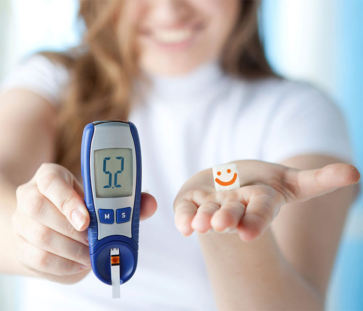
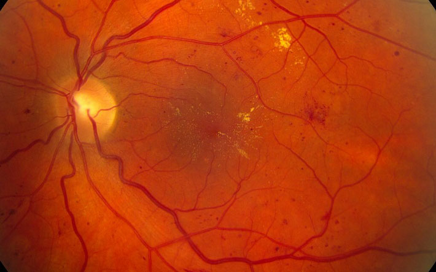

¡Es hora de olvidarse de la diabetes! Tratamiento asequible desde la comodidad de su hogar
La diabetes tipo 2 está barriendo el planeta a un ritmo sin precedentes. Desafortunadamente, sin un control regular del azúcar en la sangre, el diagnóstico de la enfermedad es difícil. Si ya conoce la enfermedad o solo sospecha que la tiene, debe tomar medidas lo antes posible. ¿Cuáles, usted las conocerá en este artículo.

El peligro de la diabetes
En riesgo de diabetes tipo 2 están las personas que tienen:
- sobrepeso;
- hay parientes más cercanos con esta enfermedad;
- 45 años o más;
- no tienen suficiente actividad física;
- hubo diabetes gestacional (aumento significativo del azúcar durante el embarazo);
- hay una alteración en la tolerancia a la glucosa;
- alta presión, colesterol alto en la sangre y triglicéridos.
El desarrollo de la diabetes mellitus tipo 2 depende más del estilo de vida y la nutrición que de la predisposición genética. Para deshacerse de la enfermedad adquirida, debe elegir un tratamiento y es deseable seguir una dieta.
Con el tiempo, la diabetes causa lesiones en el corazón, los vasos sanguíneos, los ojos, los riñones y los nervios. Esto se debe a los efectos negativos de los medicamentos para reducir el azúcar en la sangre.
Las consecuencias de la enfermedad son más a menudo atribuidas a:
- infartos y accidentes cerebrovasculares;
- neuropatía (daño a los nervios), úlceras en los pies; como consecuencia, un mayor riesgo de infección y, en última instancia, la amputación de la extremidad afectada;
- retinopatía diabética, daño vascular de la retina ocular, ceguera total;
- insuficiencia renal, falla renal.
retinopatía diabética
Los efectos de la enfermedad son mucho más graves que su manifestación. En ausencia de un tratamiento adecuado, es imposible evitar el desarrollo de complicaciones adicionales.
Cómo se trata la diabetes en los países avanzados
Estados Unidos y gran parte de Europa en la última década llegaron a la conclusión de que la diabetes se puede eliminar para siempre. En los países avanzados, esto se hace con medicamentos especiales con contenido de bloqueador de glucosa. En nuestro país, el uso de este método de tratamiento comenzó relativamente recientemente y ya ha demostrado una enorme eficacia en el contexto del tratamiento conservador de la diabetes.

Dependiendo de la marca y el país del fabricante, sus precios oscilan entre $ 50 y $ 500. Los más baratos no tienen certificados de calidad, no se estudian en laboratorios, no hay confirmación de su efectividad. Los caros a menudo suben su precio por la reputación: cuanto más dinero se invierte en publicidad, más caro es el producto final.
Por esto mismo, es mejor comprar medicamentos de precio medio. Sus fabricantes aún son lo suficientemente responsables como para investigar y obtener una confirmación de la calidad de su producto. Al mismo tiempo, no son tan grandes como para poner el costo según la marca. A menudo, fabrican medicamentos específicamente para clínicas y no hacen publicidad, lo que les permite mantener el costo óptimo y la disponibilidad para todos los necesitados.
La asociación Médica de salud ha reconocido el mejor medicamento en la categoría de precio medio . Es un remedio a base de plantas, sin componentes sintéticos. El medicamento ha pasado la certificación en el país y la aprobación del Ministerio de salud para vacaciones de venta libre para todos.
En comparación con medicamentos similares de esta categoría, es significativamente el líder.
La compañía fabricante ya ha recibido permiso para suministrar el remedio a las cadenas de farmacias, pero no saldrá antes de 3-6 meses. Hasta ese momento, se puede comprar en el sitio web del fabricante, y hasta , también con un descuento del 50%.